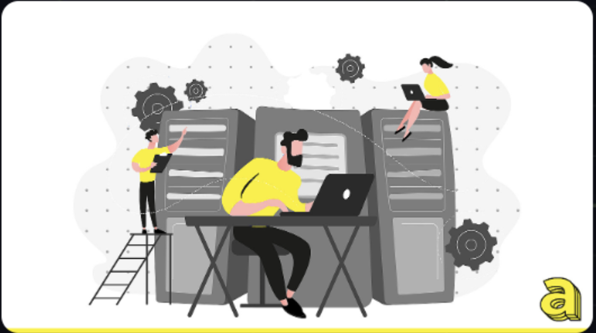
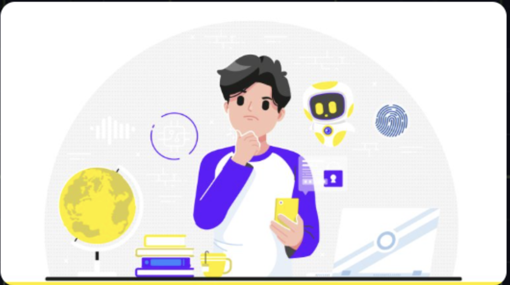

La figura del Data Analyst è diventata una delle più ricercate nel mondo aziendale
degli ultimi anni. In un contesto in cui i dati sono il nuovo "petrolio" dell'economia digitale,
le aziende si trovano a doverli analizzar...

Negli ultimi anni, l'intelligenza artificiale (AI) ha fatto passi da gigante,
diventando uno strumento indispensabile per semplificare e velocizzare moltissime attività
quotidiane. Tra i vari strumenti di intelligenza artificiale...
Nell'era digitale in cui viviamo, la sicurezza informatica, meglio nota come
cybersecurity, è diventata una priorità fondamentale per individui, aziende e governi.
Ne sentiamo sempre più parlare ma, esattamente, cos'è la...